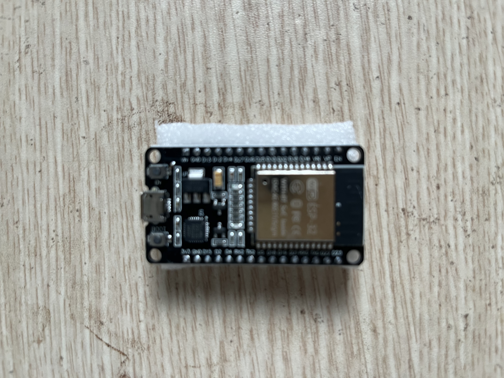

P15 Stepper motor
Điều khiển stepper 28BYJ-48 bản 5V qua board ULN2003 đi kèm.
An toàn
Chỉ mua đúng motor 5V. Cấp 5V từ LM2596 cho ULN2003, không lấy dòng motor từ chân 3.3V của ESP32, và không rút/cắm motor khi đang có nguồn.
Ảnh linh kiện

Combo 28BYJ-48 5V + ULN2003 — chụp sau khi mua
Vai trò các khối
| Thiết bị | Vai trò |
|---|---|
| 28BYJ-48 5V | Stepper giảm tốc 5 dây. |
| ULN2003 | Đóng/cắt dòng bốn cuộn motor từ IN1–IN4. |
| LM2596 đặt 5.0V | Cấp nguồn riêng cho motor/driver. |
| Tụ 470µF/16V | Ổn định rail 5V gần board driver. |
Các bước làm
- Đo đầu ra LM2596 đúng 5.0V.
- Cắm socket motor vào ULN2003 rồi nối IN1–IN4.
- Test quay chậm một vòng theo sequence.
- Tính số step cho 90/180 độ.
Hoàn thành khi
- Stepper quay được góc lặp lại ổn định.
- Motor và ULN2003 không nóng bất thường.